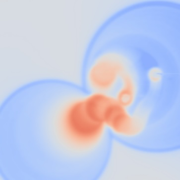
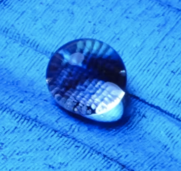
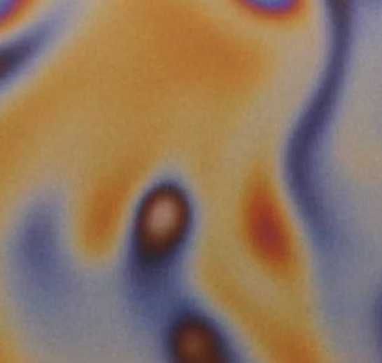
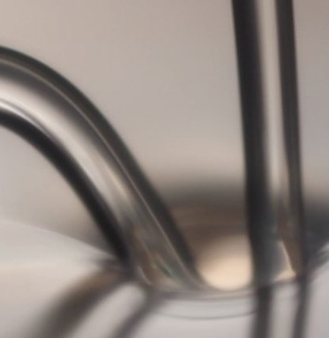

Our work
Publications
A peek into our scientific world
Can't access a paper? Find copies on our ResearchGate profile.
2026

Bipolar surface charging by evaporating water droplets
arXiv preprint, arXiv:2508.08884, 2026

Spontaneous Coulomb fissions of drops on lubricated surfaces
Proceedings of the National Academy of Sciences (PNAS), 123(18), e2538161123, 2026
2024

Emergent collective motion of self-propelled condensate droplets
Physical Review Letters (PRL), 2024
2019

Directional pumping of water and oil microdroplets on slippery surface
Proceedings of the National Academy of Sciences (PNAS), 116(7), 2019

Mapping micron-scale wetting properties of superhydrophobic surfaces
Proceedings of the National Academy of Sciences (PNAS), 116(50), 2019
2018

Film dynamics and lubricant depletion by droplets moving on lubricated surfaces
Physical Review X, 8, 031053, 2018

Stable Liquid Jets Bouncing off Soft Gels
Physical Review Letters, 120, 028006, 2018